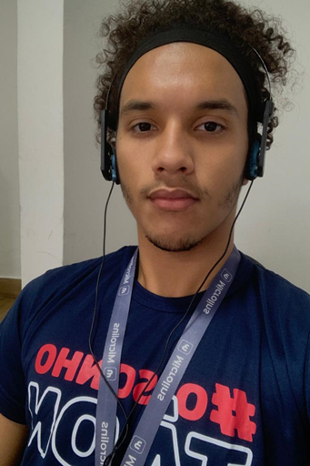

Olá! Sou Renan Peres Desenvolvedor Fullstack
Desenvolvedor web full-stack com experiência em desenvolvimento de aplicações web escaláveis e responsivas. Sou apaixonado por criar soluções tecnológicas que resolvem problemas reais e que agregam valor aos usuários.
Saiba Mais
